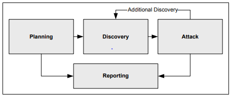

Testing software involves the development of both functional and
nonfunctional test scenarios and cases. Functional testing aims to assess the
functionality of the software in respect to functional specifications. Nonfunctional
testing aims to assess nonfunctional aspects of software, including its resilience
to misuse or malicious acts.
Considering that the primary objective of security testing is to
ensure that software is free of vulnerabilities and that it can withstand attacks,
the task of creating security to achieve that objective is a
delicate one that requires specific skills and know-how.
Objectives
Identify the guidelines for security testing.
Identify various security test cases.
Recognize the importance of creating misuse and abuse cases.
Overview
Testing may be functional or nonfunctional. Security testing
focuses on detecting pre-compilation weaknesses or post-compilation vulnerabilities
in software systems. The objective of security testing is to identify and remediate
issues within the SDLC before the organization suffers degradation in capabilities
and continuity. From a business perspective, security test activities are often
conducted to reduce overall project costs, protect brand, reduce litigation
expenses, conform to regulatory requirements, or enhance the confidence of
receivers.
Guidelines for Security Testing
Before delving into different security testing methods and
techniques, review the following list of practices that can improve security testing
in general and should be represented in an organizational security testing strategy.
Test early and often.
Have a balanced approach.
Implement proper tools and techniques.
Develop metrics to measure progress.
Further, comprehensive security testing should include testing
of every component of a software system, not only the web interface components
(e.g., web portals), but also where applicable, the mobile apps (e.g., iOS and
Android versions), APIs (e.g., RESTful APIs), database components, and so on.
Testing goals must identify not only those vulnerabilities that are due to insecure
coding but also those that are due to flaws in design and architecture. Software
security testing must ensure that software meets the security objectives of
confidentiality, integrity, and availability. Third-party frameworks and libraries
should also be included where applicable.
In the case of web applications in particular, testing should
include authentication, authorization, session management, data validation, logging,
configuration, and cryptography, among other functions.
Test Environment
One way to understand the importance of setting up a proper test
environment is to think of it as a platform that has been specifically built for
executing test cases.
A test environment should be separate and isolated from the
development environment; at a minimum, it should involve hardware, software, a
properly configured network, and test execution tools. Additionally, the test
environment should simulate the real production environment. Configuration drifts
between environments can be problematic.
Test execution tools are also known as capture/playback and
capture/replay tools. The test execution tools offer scripting languages and
capabilities for repeating actions, and conditional execution paths.
Functional Security Testing
Typically performed by the quality assurance (QA) team,
functional security testing focuses on activities that will validate that a
particular security feature indeed works as expected; thus, enabling users to
perform a certain function as specified by the requirements.
Testing may be performed from different perspectives:
By prioritizing the requirements per risk criteria and executing the tests
accordingly.
By relying on scenarios that represent the day-to-day business use and
constructing them based on knowledge of the business processes.
One example in this category (where applicable) would be the
testing conducted by the QA team to ensure that the password reset function in the
application works as specified by the requirements.
Nonfunctional Security Testing
As the term implies, nonfunctional security testing consists of
testing the nonfunctional security aspects of the software. One example in this
category (where applicable) would be the testing that is conducted to ensure that
software fails in a secure state, and the stack trace is not exposed in the case of
encountering runtime anomalies.
Besides security testing, nonfunctional testing is also used in
the industry to imply an umbrella for several test methods. Nonfunctional testing
typically includes scalability, interoperability, and performance. Each is expounded
below.
testing primarily
measures the ability of the software to scale as necessary and demanded by
business/users. It is important to understand that scalability of a software
system must be supported by the scalability of its various components (e.g., the
database component).
testing aims to
provide assurance of end-to-end functionality between communicating systems, as
most software systems do not operate in a silo.
Performance testing may be an umbrella to include other types of testing;
however, it primarily ensures that acceptable levels of performance can be
achieved under various conditions.
From a general security perspective, security practitioners
should ensure that testing provides adequate coverage of critical components with
respect to confidentiality, integrity, and availability. The non-security-centric
examples above for scalability and performance map to the security goal of
availability.
Attack Surface Validation
Security testing can support the validation of the
of an application. For
example, open source or commercial dynamic and vulnerability assessment tools can be
used to enumerate an application structure and identify parts of the application
that are accessible over the web. Iterative attack surface analysis is important to
ensure that security testing strategy, policies, and procedures are aligned with
organizational risk management needs. Security, including testing, must adapt to
maintain alignment with organizational risk posture.
Penetration Tests
NIST defines as security testing
in which evaluators mimic real-world attacks to identify ways to circumvent the
security features of an application, system, or network. Penetration testing often
involves issuing real attacks on real systems and data, using the same tools and
techniques used by actual attackers. Most penetration tests involve looking for
combinations of vulnerabilities on a single system or multiple systems that can be
used to gain more access than could be achieved through a single vulnerability. More
succinctly, OWASP defines software penetration testing as the art of testing a
running application remotely to find security vulnerabilities without knowledge of
the application inner workings. Regardless of definition, penetration testing
involves simulating attacks to uncover vulnerabilities.
Typically, a penetration test team can access an application as
if they were users. Testers act as though they are attackers and attempt to identify
and exploit vulnerabilities. In many cases, testers may also receive standard or
administrator user accounts as well. Penetration tests, like other test methods,
frequently involve a combination of manual testing techniques and specialized
automated penetration testing tools.
The objective of penetration testing is to observe whether the
software resists or tolerates the attacks and how it behaves when it cannot do so.
Penetration testing pays particular attention to those aspects of software behavior,
interactions, and vulnerabilities that cannot be observed using other test
techniques during the software’s development, integration, and staging for
deployment.
As described in a NIST Special Publication 800-115, Technical
Guide to Information Security Testing and Assessment, penetration tests should
answer the following questions:
How cyber resilient is the software system?
What is the level of sophistication or effort required to execute a
compromise?
Can we identify countermeasures to adequately mitigate software
vulnerabilities?
According to this NIST publication, penetration testing involves
four phases: planning, discovery, attack, and reporting, as shown in this figure.

Figure 4: NIST’s Penetration Testing Phases
In general, penetration testing may have many components and may
also involve the security assessment of network, application, wireless, and even
physical security. Whereas NIST has four phases, most other penetration testing
methodologies have five phases, as shown in this figure.
Figure 5: Typical Penetration Testing Phases
Planning. In the planning phase, the senior management of the
organization and the penetration testers will identify rules of engagement
(approval to begin test, test windows) and set testing goals. Then, management
approval is finalized and documented. The planning phase sets the groundwork for
a successful penetration test. No actual testing occurs in this phase.
Discovery. The discovery phase is the start of actual testing and
covers information gathering and scanning. Network port and service
identification is conducted to identify potential targets. Other techniques are
used to gather information on host name, IP address, system information, and
application and service information. In some cases, techniques such as physical
walk-throughs of facilities and examination of trash bins may be used to collect
additional information on the targeted network. These efforts may also uncover
additional information to be used during the penetration tests, such as
passwords written on paper.
Vulnerability Mapping. Vulnerability mapping involves comparing the
services, applications, and operating systems of scanned hosts against
vulnerability databases, as well as the testers’ own knowledge of
vulnerabilities.
Attack. Executing an attack is at the heart of any penetration test. It
is the process of verifying previously identified potential vulnerabilities by
attempting to exploit them. If an attack is successful, the vulnerability is
verified, and safeguards are identified to mitigate the associated security
exposure. If an attack is unsuccessful, the tester should attempt to exploit
another discovered vulnerability. A successful attack equates to verification of
a vulnerability. An unsuccessful attack does not mean that the vulnerability is
not exploitable.
Reporting. The reporting phase occurs simultaneously with the other
phases of the penetration test. In the planning phase, the assessment plan is
developed, along with rules of engagement. A report has various sections,
including an executive summary, summary and/or details of identified
vulnerabilities, attack scenarios and results, and mitigation recommendations.
In the discovery and attack phases, written logs are usually
kept, and periodic reports are made to system administrators and/or management. At
the conclusion of the test, a report is compiled to describe identified
vulnerabilities, present a risk rating, and give guidance on how to mitigate the
discovered weaknesses.
Penetration testing often includes nontechnical methods of
attack as well. For example, a penetration tester could breach physical security
controls and procedures to connect to a network, steal equipment, capture sensitive
information (possibly by installing keylogging devices), or disrupt communications.
Exercise caution when performing physical security testing. Security guards should
be made aware of how to verify the validity of tester activity, such as via a point
of contact or documentation. Another nontechnical means of attack is the use of
social engineering, such as posing as a help desk agent and calling to request a
user’s passwords, or calling the help desk posing as a user and asking for a
password to be reset.
Fuzzing
Fuzzing (also known as ) is a black box testing
technique. It is done through automated means (e.g., using fuzz tools) and is
intended to find implementation bugs by injecting malformed/semi-malformed data.
NIST relates fuzz testing to fault injection in that invalid data is input into the
application via the environment, or input by one process into another process. Fuzz
testing is implemented by tools commonly referred to as “fuzzers,” which are
programs or scripts that submit some combination of inputs to the test target to see
how it responds.
The attack vector is the I/O of the system being fuzzed and may
include the user interface, command line, import/export capabilities, URLs, forms,
etc. Fuzzing programs fall into two different categories:
Generation-based. In generation-based fuzzing, there is an
understanding of the file format or protocol. Generation-based fuzzing involves
“generating” the fuzz inputs from scratch based on the specification or format.
This type of fuzzing is also known as “smart” or “intelligent” fuzzing.
Mutation-based. In mutation-based fuzzing, injecting the fault values
is done blindly. Hence, it is also known as “dumb” fuzzing, as in lacking
understanding of the format or structure of the data. One example can be just
replacing or appending a random section of data.
Various fuzzing tools are designed to be used at different
points in the software development life cycle. Some should be used in tandem with
unit testing, others with integration testing, and still others in acceptance
testing.
Fuzzing Advantages
When an automated process or tool fuzzes various entry points of
the software indiscriminately with no assumptions, quickly, repeatedly, and with
ease, issues such as memory leaks or buffer overflows that otherwise may have gone
undetected could surface. This makes fuzz testing useful for regression tests.
Fuzzing Challenges
No single method of testing can uncover all the
security-relevant issues in software. Each testing method is best suited for
uncovering types of vulnerability. However, the two main challenges with fuzzing are
setup and data analysis. Fuzzing tends to require special setup to include a testing
harness. Fuzz testing is noisy and produces large amounts of data, which often
include false positive results.
Scanning
Scanning hosts, networks, and applications for vulnerabilities
is common practice, and in many cases required. PCI-DSS is an example of an industry
standard that has requirements in this regard.
Vulnerability Scanning
Vulnerability scanning can help identify outdated software
versions, missing patches, and misconfigurations as well as validate compliance with
or deviations from an organization’s security policy. This is done by identifying
the operating systems and major software applications running on the hosts and
matching them with information on known vulnerabilities.
A vulnerability scanner is a relatively fast and easy way to
quantify an organization's exposure to surface vulnerabilities. A surface
vulnerability is a weakness that exists in isolation, independent from other
vulnerabilities. The system’s behaviors and outputs in response to attack patterns
submitted by the scanner are compared against those that characterize the signatures
of known vulnerabilities, and the tool reports any matches that are found.
Tools available for automated vulnerability scanning at the
application-level focus on web applications, web services, and mobile apps. In
addition, other scanning products are available for assessing vulnerabilities in
various components of software’s typical execution environment, including scanners
for popular web servers, database management systems, virtual machines, and
operating systems.
Many scanners combine simulated actions of a client or browser
to submit inputs and observe the target’s resulting behavior, scanning for
configuration errors, dangerous static conditions, and violations such as sensitive
data leaks or communications over prohibited network ports. Like virus scanners and
intrusion detection systems, most vulnerability scanners are signature-based and
need to be continuously updated with new signatures from their vendors.
Application Vulnerability
Scanners
Application vulnerability scanners scan executing software for
vulnerability patterns. Although vulnerability scanners can detect simple
vulnerabilities because they are essentially automated pattern-matching tools, they
cannot pinpoint risks associated with aggregations of vulnerabilities or
vulnerabilities that emerge from unfamiliar, anomalous combinations of input and
output patterns.
Some web application vulnerability scanners attempt to overcome
the limitations of signature-based scanning by performing a combination of simulated
reconnaissance attacks and fuzz tests to probe the application for additional known
and common vulnerabilities that typically elude signature-based scans.
Many vulnerabilities detected by signature-based scanners may be
located in sections of code that are unused, or dead. The removal of dead code
before compiling the application will often significantly reduce the number of
vulnerabilities that would otherwise be found through automated vulnerability
scanning. However, it can be very challenging to locate dead code in third-party
software, especially when the third-party source code is not available.
Content Scanning
Content scanning may be done to achieve different objectives.
For example, it may be done to inspect traffic for either malicious threats or
confidential data leakage. What we mean by confidential data leakage is data an
employee should not be sending out, such as a company’s financial statement.
Encrypted traffic presents a challenge in this regard.
One of the main concerns regarding using content scanning is
that of privacy. In those cases, exceptions should be considered to exclude sites
such as financial sites. Another possibility is to alert users (e.g., through a
warning page) if their content is being inspected.
Cryptographic Validation
Cryptographic validation is the testing, evaluation, and
validation of cryptographic modules in accordance with a set standard. A good
example is the cryptographic module validation program established by NIST, where
vendors work with designated security testing laboratories to test their modules
against applicable standards.
It should also be noted that as part of a comprehensive software
testing program, an organization should make the effort to ensure it is adhering to
best practices and standards. Automated static analysis tools and manual security
code reviews as part of a white box testing effort can help identify risky
operations (e.g., usage of unsafe randomization functions for generating tokens) or
deprecated and weak algorithms/APIs.
Validation of cryptographic modules is valuable for compliance
purposes. FIPS 140-2 is a perfect example of such validation, which may be achieved
through NIST specified laboratories.
Pseudorandom Number Generator
(PRNG)
In the context of cryptography, any weakness in the process of
generating true random numbers could result in patterns in the cipher. This may
result in a substantial reduction in the work factor for the adversaries to a point
where a brute force attack may be economically feasible. Software is far from
perfect when it comes to randomization, so where and when possible,
hardware-assisted cryptography is valued.
NIST SP 800-90A, Recommendation for Random Number Generation
Using Deterministic Random Bit Generators, states that:
There are two fundamentally
different strategies for generating random bits. One strategy is to produce bits
non-deterministically, where every bit of output is based on a physical process
that is unpredictable; this class of random bit generators (RBGs) is commonly
known as non-deterministic random bit generators (NRBGs). The other strategy is
to compute bits deterministically using an algorithm; this class of RBGs is
known as Deterministic Random Bit Generators (DRBGs). 5
(PRNGs)
are also deterministic random bit generators. A PRNG is an algorithm for generating
a random sequence of numbers. Due to the static nature of the initial values used in
software-based random number generators, the use of hardware is recommended for this
purpose.
Cryptographically Secure Pseudorandom
Number Generator (CSPRNG)
A cryptographically secure pseudorandom number generator
(CSPRNG) is a PRNG with properties that make it suitable for use in cryptography.
Many aspects of cryptography require random numbers, such as:
Key generation
Nonces
One-time pads
Salts
There are many methods for testing the randomness of binary
sequences. The NIST Test Suite is a statistical package consisting of 15 tests that
were developed to test the randomness of (arbitrarily long) binary sequences
produced by either hardware- or software-based cryptographic random or pseudorandom
number generators.
One example from this test suite is Frequency (Monobit) Test:
The focus of the test is the
proportion of zeroes and ones for the entire sequence. The purpose of this test
is to determine whether the number of ones and zeroes in a sequence are
approximately the same as would be expected for a truly random sequence. The
test assesses the closeness of the fraction of ones to ½, that is, the number of
ones and zeroes in a sequence should be about the same. All subsequent tests
depend on the passing of this test.6
Entropy
In cryptography, it’s important for secret values to be
unpredictable. Entropy is the amount of uncertainty that an attacker must face to
determine the value of a secret. It is difficult to create sources of entropy for
random bit generators; true randomization is challenging because we generally fall
into creating patterns even if we try not to.
Testing, or validating, entropy sources is necessary to meet
requirements. NIST recommends the following to validate an entropy source:
An entropy source may be
submitted to an accredited lab for validation testing by the developer or any
entity with an interest in having an entropy source validated. After the entropy
source is submitted for validation, the lab will examine all documentation and
theoretical justifications submitted. The lab will evaluate these claims and may
ask for more evidence or clarification.7
6 Andrew Rukhin, Juan Soto, James Nechvatal, Miles
Smid, Elaine Barker, Stefan Leigh, Mark Levenson, Mark Vangel, David Banks, Alan
Heckert, James Dray, San Vo; National Institute of Standards and Technology; NIST
Special Publication 800-22 Revision 1a -- A Statistical Test Suite for Random and
Pseudorandom Number Generators for Cryptographic Applications; https://nvlpubs.nist.gov/nistpubs/Legacy/SP/nistspecialpublication800-22r1a.pdf;
retrieved July 2023.
Due to the fundamental importance of entropy and cryptography in
general for securing data at rest and in transit, discussions around the concept of
Entropy-as-a-Service (EaaS) have also been presented, especially regarding the
Internet of Things (IoT):
Standard deterministic computers
have trouble producing good randomness, especially IoT-class devices that have
little opportunity to build entropy locally before they begin network
communications. The best sources of true randomness are based on unpredictable
physical phenomena, such as quantum effects, but they can be impractical to
include in IoT devices. Finding ways to unlock the full potential of
cryptography to secure data on the IoT can offer hope for a better
future.8
Earlier, we discussed the relationship between use cases and
misuse or abuse cases. We also highlighted the importance of creating misuse and
abuse cases.
In general, a test case answers the question, “What am I going
to test?” You develop test cases to define the things that you need to validate to
ensure that the system is working as expected.
It is common for a test case to have an ID, test scenario, test
case description, test steps, prerequisite(s), test data, and environment
information, among other parameters.
Use case testing involves testing common scenarios where actors
(users or other systems) interact with the system to complete a task and achieve a
goal. For this reason, use cases can be utilized as the basis for the creation of
useful test cases that can lead to uncovering defects based on real usage of the
system.
Misuse and abuse cases can help with the specification of
appropriate needed functions and controls to block the intended misuse and abuse.
Controls that were subsequently identified must have been incorporated into the
design of the software and implemented to provide the intended functions. During the
testing phase of the life cycle, test cases should be created to verify the
implementation and effectiveness of those identified controls.
Simulation
Simulation is the imitation of the operation of a real-world
process or system. The act of simulating something first requires that a model be
developed. This model represents the key characteristics, behaviors, and functions
of the selected physical or abstract system or process.
Simulating Production Environment and
Production Data
Software should be tested in an environment that is configured
as closely to the target production environment as possible using production-like
data; otherwise, test results may not be very accurate. This may require the QA
environment to mirror the production environment or simulate it closely. Production
data in non-production environments can be a problem.
Software that works well in one environment may experience
issues when deployed to a hardened production environment. Configuration mismatch
between environments historically has presented challenges to organizations that
develop software. However, this problem can be less of an issue in the cloud, as
infrastructure management services can simplify the process. For example, using
templates to set up resources consistently and repeatedly to replicate an
environment is much easier and more efficient than manual and error-prone processes
to replicate and configure all the resources needed by the application.
Synthetic Workloads
Effective testing and evaluation of software may require
workloads with certain characteristics for the purpose of analysis and benchmarking
the performance of the software. Generation of these workloads for testing purposes
(e.g., testing the performance of a hypervisor’s scheduling algorithm) may pose a
challenge to the organization. Synthetic workload generators may be used for this
purpose.
Real User and Synthetic
Monitoring
Simulation may also be used for the purpose of monitoring. The
primary objective of monitoring in this context is to have feedback (preferably
continuous) from production, that is, receive information about the performance and
usage patterns of an application in production.
This information can then be used for various purposes,
including achieving high availability or minimizing time to detect or mitigate.
Monitoring in this sense is a proactive measure. Two common methods of monitoring
include:
Real User Monitoring (RUM)
(RUM)
concerns monitoring user interactions (e.g., with websites or
applications). Interactions are recorded for the purpose of collecting
performance data and improving the user experience. An example is
monitoring by SaaS providers to manage service quality.
RUM is also used to perform tests before website or application changes
are rolled out to production. RUM typically does provide repeatable
measurements over time, which contrasts with synthetic monitoring.
Synthetic Monitoring
With , scripts are deployed for the
purpose of simulating the path taken by an end user. Web browser
emulation capabilities or scripts may be used to capture performance
data during each run.
Commercial or open-source tools for synthetic monitoring are available,
or you may choose to develop your own if appropriate. These tools can be
set up to perform simple tests or more complex tests involving multiple
steps to meet specific objectives and needs. For example, tools may
allow the user to set test frequency, test location, and test retries,
and may allow for success criteria to be defined for each test.
Synthetic Transactions
Synthetic transactions refer to transactions that serve no
business value other than to exercise the system programming and infrastructure.
Synthetic transactions can be passive or active. Passive
synthetic transactions create no residual impact to the system. In the case of an
order status application, a synthetic transaction would be a status query on behalf
of a “dummy” customer, which is maintained by the testing organization.
In active synthetic transactions, the transaction itself is
processed and stored within the application. An example of this would be a “dummy”
order placed by a “dummy” customer to test the order-processing attributes of the
system. In this case, care must be taken to prevent the transaction from being
processed by later processes (such as picking and shipping), or from creating an
impact within the financial subsystem. If active synthetic transactions are to be
used, then special data setup is often required to prevent any impact across the
production environment.
Failure Testing
Under certain conditions, defects in software may be executed
and result in the software failing to perform its required function(s). Not all
defects result in failures; some may stay inactive in the code, and we may never
notice them. For example, defects in dead code will never result in failures.
It is not just defects that give rise to failures. Failures can
also be attributed to other causes:
The operational environment may cause conditions that might prevent or change
the execution of software.
Human error in interacting with the software may result in a wrong input value
being entered or an output being misinterpreted.
These issues cause incidents to be reported. To deal with the
incidents, the programmer needs to determine whether this incident has occurred
because of the failure or for some other reason.
During software testing, errors, defects, and vulnerabilities
may be identified. Errors due to mistakes made by developers may result in flaws or
defects in software. These flaws may introduce vulnerabilities into the software,
threatening the security objectives of confidentiality, integrity, or availability.
Once again, it is important to note that vulnerabilities are not always due to
coding errors and may be traced back to design flaws, configuration settings, etc.
Source Code Fault Injection
As a form of testing, fault injection is about purposely
introducing errors to assess how the software behaves in the presence of error
conditions. Fault injection may be done at compile time or run time.
Compile-Time Injections. This is a fault injection technique where
source code is modified to inject simulated faults into a system.
Run-Time Injections. This makes use of software trigger to inject a
fault into a software system during run time.
When the instrumented code is compiled and executed, the tester
can trace between the executing code and the instrumented source code to observe the
software’s behavior and state changes when execution reaches each instrumented code
portion. In this way, the tester can observe and even quantify the secure and
insecure state changes that result from the instrumented faults, as well as the ways
in which such faults propagate throughout the program (as traced through its source
code).
Source code fault injection is particularly useful for detecting
incorrect use of pointers and arrays, race conditions, and use of dangerous system
calls. When new attack patterns and intrusion techniques emerge, the source code can
be re-instrumented with representative faults. Note that while source code fault
injection achieves greater code coverage and a lower false positive rate than other
testing methods, it also requires a deeper understanding of the software that is
being tested.
Stress Testing
is a type of nonfunctional
testing that involves testing beyond normal operational capacity—often to a breaking
point—and observing the results. Stress testing can help ensure that software
exhibits correct behavior under stressful conditions. Although it is true that large
volumes of data or many concurrent users can create stressful conditions for the
software, stress testing should not be confused with volume testing or load testing.
The basic differences between these three forms of testing are summarized below:
Volume testing uses a large amount of data.
Load testing uses a large number of users.
Stress testing may use too many users and too much data.
In the case of a web application, here are some ways in which
stress can be applied to a system:
Double the baseline number for concurrent users/HTTP connections.
Randomly shut down and restart ports on the network switches/routers that
connect the servers (e.g., via SNMP commands).
Take the database offline, then restart it.
Run processes that consume resources (CPU, memory, disk, network) on the web and
database servers.
Break Testing
Break testing is creating tests that will fail for various
reasons, such as latency, invalid responses, and incomplete/unacceptable data. The
list of what break testing should test is long. Break testing examines the response
of a system in case of hardware or software failures, such as lost connections to a
database, network failures, and anything else that is unpredictable and breaks the
normal path of execution.
Break testing confirms the expected system behavior in case of
any breakage. The restart and recovery part of the overall architecture plays a very
important role in defining the conditions for break testing. The break testing needs
to be facilitated by the infrastructure support groups and development team. They
are needed to create the scenario and analyze the results.
Functional Testing
If one considers functional testing as a form of black box
testing, then the logical conclusion is that our objective is to confirm that the
software meets its functional requirements and is behaving as expected.
Test automation through scripts and tools designed for this
purpose can go a long way toward enhancing the testing process, whether testing web
applications, mobile applications, web APIs, and so on. Whereas considering
opportunities for automation is a great idea, abandoning manual testing in favor of
complete automation may not be the wisest choice. Not all tests are good candidates
for automation.
Several types of testing are referred to as functional testing.
Common to all software development initiatives are the functional testing methods
best known as unit testing, integration testing, and regression testing.
Unit Testing and Code Coverage
is about developers testing
small units of code (i.e., often functions and methods) in isolation using stubs and
drivers to address dependencies of the unit of code being tested. Unit testing
focuses on the input, processing, and output of a software unit which typically
references function or method testing.
Unit tests ensure that individual pieces or objects are
functioning correctly by supplying a specific set of inputs and known outputs which
are measured against the actual values returned. Unit testing ensures that new
development performs required functions and prevents regressions during sustainment.
Since unit testing detects issues before being committed to a repository, the cost
of fixes is typically reduced, and debugging is simplified.
Test cases must be created to provide adequate code coverage –
that is, the percentage of the code covered by tests. Even with complete code
coverage, there is no guarantee that the code is free of defects, as there may be
bugs that are not identified by the existing test cases. There is also the concept
of positive and negative unit testing code. Positive cases test for functional
correctness. Negative cases expect failure and ensure that functions fail and handle
errors correctly.
Figure 6: Example Unit Test in C#
Integration Testing
Once units of code have been tested in isolation, the next
logical step is to test the interfaces between these units. Integration testing is
done following unit testing. Different approaches to integration testing have been
proposed, each with its own pros and cons.
Systems seldom run in silos without dependencies on other
software systems and processes, both upstream and downstream. Another form of
integration testing is system integration testing, which focuses on the verification
of proper execution and functionality of software components and interfaces between
modules within the solution.
Regression Testing
When software is touched (e.g., adding new features or bug
fixes), there is always the possibility that things that used to work may experience
issues after the introduction of the change. This makes necessary to ensure
that the existing functionality remains intact.
Automation of regression testing is widely adopted to minimize
the tedious and repetitive steps and tasks of testing. Automation may rely on sets
(libraries) of unit test cases that are automatically executed during each
regression.
Continuous Testing
Continuous delivery in DevOps environments requires the concept
of testing that hovers around the process of testing early, often, and wherever
possible. Continuous testing methodology typically requires a great degree of
automation and contrasts with the traditional testing model of handoff from one team
to another (e.g., development team to QA team).
Security Test Cases (6.2)
Testing software involves the development of both functional and nonfunctional test scenarios and cases. Functional testing aims to assess the functionality of the software in respect to functional specifications. Nonfunctional testing aims to assess nonfunctional aspects of software, including its resilience to misuse or malicious acts.
Considering that the primary objective of security testing is to ensure that software is free of vulnerabilities and that it can withstand attacks, the task of creating security to achieve that objective is a delicate one that requires specific skills and know-how.
Objectives
Overview
Testing may be functional or nonfunctional. Security testing focuses on detecting pre-compilation weaknesses or post-compilation vulnerabilities in software systems. The objective of security testing is to identify and remediate issues within the SDLC before the organization suffers degradation in capabilities and continuity. From a business perspective, security test activities are often conducted to reduce overall project costs, protect brand, reduce litigation expenses, conform to regulatory requirements, or enhance the confidence of receivers.
Guidelines for Security Testing
Before delving into different security testing methods and techniques, review the following list of practices that can improve security testing in general and should be represented in an organizational security testing strategy.
Further, comprehensive security testing should include testing of every component of a software system, not only the web interface components (e.g., web portals), but also where applicable, the mobile apps (e.g., iOS and Android versions), APIs (e.g., RESTful APIs), database components, and so on. Testing goals must identify not only those vulnerabilities that are due to insecure coding but also those that are due to flaws in design and architecture. Software security testing must ensure that software meets the security objectives of confidentiality, integrity, and availability. Third-party frameworks and libraries should also be included where applicable.
In the case of web applications in particular, testing should include authentication, authorization, session management, data validation, logging, configuration, and cryptography, among other functions.
Test Environment
One way to understand the importance of setting up a proper test environment is to think of it as a platform that has been specifically built for executing test cases.
A test environment should be separate and isolated from the development environment; at a minimum, it should involve hardware, software, a properly configured network, and test execution tools. Additionally, the test environment should simulate the real production environment. Configuration drifts between environments can be problematic.
Test execution tools are also known as capture/playback and capture/replay tools. The test execution tools offer scripting languages and capabilities for repeating actions, and conditional execution paths.
Functional Security Testing
Typically performed by the quality assurance (QA) team, functional security testing focuses on activities that will validate that a particular security feature indeed works as expected; thus, enabling users to perform a certain function as specified by the requirements.
Testing may be performed from different perspectives:
One example in this category (where applicable) would be the testing conducted by the QA team to ensure that the password reset function in the application works as specified by the requirements.
Nonfunctional Security Testing
As the term implies, nonfunctional security testing consists of testing the nonfunctional security aspects of the software. One example in this category (where applicable) would be the testing that is conducted to ensure that software fails in a secure state, and the stack trace is not exposed in the case of encountering runtime anomalies.
Besides security testing, nonfunctional testing is also used in the industry to imply an umbrella for several test methods. Nonfunctional testing typically includes scalability, interoperability, and performance. Each is expounded below.
From a general security perspective, security practitioners should ensure that testing provides adequate coverage of critical components with respect to confidentiality, integrity, and availability. The non-security-centric examples above for scalability and performance map to the security goal of availability.
Attack Surface Validation
Security testing can support the validation of the of an application. For example, open source or commercial dynamic and vulnerability assessment tools can be used to enumerate an application structure and identify parts of the application that are accessible over the web. Iterative attack surface analysis is important to ensure that security testing strategy, policies, and procedures are aligned with organizational risk management needs. Security, including testing, must adapt to maintain alignment with organizational risk posture.
Penetration Tests
NIST defines as security testing in which evaluators mimic real-world attacks to identify ways to circumvent the security features of an application, system, or network. Penetration testing often involves issuing real attacks on real systems and data, using the same tools and techniques used by actual attackers. Most penetration tests involve looking for combinations of vulnerabilities on a single system or multiple systems that can be used to gain more access than could be achieved through a single vulnerability. More succinctly, OWASP defines software penetration testing as the art of testing a running application remotely to find security vulnerabilities without knowledge of the application inner workings. Regardless of definition, penetration testing involves simulating attacks to uncover vulnerabilities.
Typically, a penetration test team can access an application as if they were users. Testers act as though they are attackers and attempt to identify and exploit vulnerabilities. In many cases, testers may also receive standard or administrator user accounts as well. Penetration tests, like other test methods, frequently involve a combination of manual testing techniques and specialized automated penetration testing tools.
The objective of penetration testing is to observe whether the software resists or tolerates the attacks and how it behaves when it cannot do so. Penetration testing pays particular attention to those aspects of software behavior, interactions, and vulnerabilities that cannot be observed using other test techniques during the software’s development, integration, and staging for deployment.
As described in a NIST Special Publication 800-115, Technical Guide to Information Security Testing and Assessment, penetration tests should answer the following questions:
According to this NIST publication, penetration testing involves four phases: planning, discovery, attack, and reporting, as shown in this figure.
Figure 4: NIST’s Penetration Testing Phases
In general, penetration testing may have many components and may also involve the security assessment of network, application, wireless, and even physical security. Whereas NIST has four phases, most other penetration testing methodologies have five phases, as shown in this figure.
Figure 5: Typical Penetration Testing Phases
In the discovery and attack phases, written logs are usually kept, and periodic reports are made to system administrators and/or management. At the conclusion of the test, a report is compiled to describe identified vulnerabilities, present a risk rating, and give guidance on how to mitigate the discovered weaknesses.
Penetration testing often includes nontechnical methods of attack as well. For example, a penetration tester could breach physical security controls and procedures to connect to a network, steal equipment, capture sensitive information (possibly by installing keylogging devices), or disrupt communications. Exercise caution when performing physical security testing. Security guards should be made aware of how to verify the validity of tester activity, such as via a point of contact or documentation. Another nontechnical means of attack is the use of social engineering, such as posing as a help desk agent and calling to request a user’s passwords, or calling the help desk posing as a user and asking for a password to be reset.
Fuzzing
Fuzzing (also known as ) is a black box testing technique. It is done through automated means (e.g., using fuzz tools) and is intended to find implementation bugs by injecting malformed/semi-malformed data. NIST relates fuzz testing to fault injection in that invalid data is input into the application via the environment, or input by one process into another process. Fuzz testing is implemented by tools commonly referred to as “fuzzers,” which are programs or scripts that submit some combination of inputs to the test target to see how it responds.
The attack vector is the I/O of the system being fuzzed and may include the user interface, command line, import/export capabilities, URLs, forms, etc. Fuzzing programs fall into two different categories:
Various fuzzing tools are designed to be used at different points in the software development life cycle. Some should be used in tandem with unit testing, others with integration testing, and still others in acceptance testing.
Fuzzing Advantages
When an automated process or tool fuzzes various entry points of the software indiscriminately with no assumptions, quickly, repeatedly, and with ease, issues such as memory leaks or buffer overflows that otherwise may have gone undetected could surface. This makes fuzz testing useful for regression tests.
Fuzzing Challenges
No single method of testing can uncover all the security-relevant issues in software. Each testing method is best suited for uncovering types of vulnerability. However, the two main challenges with fuzzing are setup and data analysis. Fuzzing tends to require special setup to include a testing harness. Fuzz testing is noisy and produces large amounts of data, which often include false positive results.
Scanning
Scanning hosts, networks, and applications for vulnerabilities is common practice, and in many cases required. PCI-DSS is an example of an industry standard that has requirements in this regard.
Vulnerability Scanning
Vulnerability scanning can help identify outdated software versions, missing patches, and misconfigurations as well as validate compliance with or deviations from an organization’s security policy. This is done by identifying the operating systems and major software applications running on the hosts and matching them with information on known vulnerabilities.
A vulnerability scanner is a relatively fast and easy way to quantify an organization's exposure to surface vulnerabilities. A surface vulnerability is a weakness that exists in isolation, independent from other vulnerabilities. The system’s behaviors and outputs in response to attack patterns submitted by the scanner are compared against those that characterize the signatures of known vulnerabilities, and the tool reports any matches that are found.
Tools available for automated vulnerability scanning at the application-level focus on web applications, web services, and mobile apps. In addition, other scanning products are available for assessing vulnerabilities in various components of software’s typical execution environment, including scanners for popular web servers, database management systems, virtual machines, and operating systems.
Many scanners combine simulated actions of a client or browser to submit inputs and observe the target’s resulting behavior, scanning for configuration errors, dangerous static conditions, and violations such as sensitive data leaks or communications over prohibited network ports. Like virus scanners and intrusion detection systems, most vulnerability scanners are signature-based and need to be continuously updated with new signatures from their vendors.
Application Vulnerability Scanners
Application vulnerability scanners scan executing software for vulnerability patterns. Although vulnerability scanners can detect simple vulnerabilities because they are essentially automated pattern-matching tools, they cannot pinpoint risks associated with aggregations of vulnerabilities or vulnerabilities that emerge from unfamiliar, anomalous combinations of input and output patterns.
Some web application vulnerability scanners attempt to overcome the limitations of signature-based scanning by performing a combination of simulated reconnaissance attacks and fuzz tests to probe the application for additional known and common vulnerabilities that typically elude signature-based scans.
Many vulnerabilities detected by signature-based scanners may be located in sections of code that are unused, or dead. The removal of dead code before compiling the application will often significantly reduce the number of vulnerabilities that would otherwise be found through automated vulnerability scanning. However, it can be very challenging to locate dead code in third-party software, especially when the third-party source code is not available.
Content Scanning
Content scanning may be done to achieve different objectives. For example, it may be done to inspect traffic for either malicious threats or confidential data leakage. What we mean by confidential data leakage is data an employee should not be sending out, such as a company’s financial statement. Encrypted traffic presents a challenge in this regard.
One of the main concerns regarding using content scanning is that of privacy. In those cases, exceptions should be considered to exclude sites such as financial sites. Another possibility is to alert users (e.g., through a warning page) if their content is being inspected.
Cryptographic Validation
Cryptographic validation is the testing, evaluation, and validation of cryptographic modules in accordance with a set standard. A good example is the cryptographic module validation program established by NIST, where vendors work with designated security testing laboratories to test their modules against applicable standards.
It should also be noted that as part of a comprehensive software testing program, an organization should make the effort to ensure it is adhering to best practices and standards. Automated static analysis tools and manual security code reviews as part of a white box testing effort can help identify risky operations (e.g., usage of unsafe randomization functions for generating tokens) or deprecated and weak algorithms/APIs.
Validation of cryptographic modules is valuable for compliance purposes. FIPS 140-2 is a perfect example of such validation, which may be achieved through NIST specified laboratories.
Pseudorandom Number Generator (PRNG)
In the context of cryptography, any weakness in the process of generating true random numbers could result in patterns in the cipher. This may result in a substantial reduction in the work factor for the adversaries to a point where a brute force attack may be economically feasible. Software is far from perfect when it comes to randomization, so where and when possible, hardware-assisted cryptography is valued.
NIST SP 800-90A, Recommendation for Random Number Generation Using Deterministic Random Bit Generators, states that:
There are two fundamentally different strategies for generating random bits. One strategy is to produce bits non-deterministically, where every bit of output is based on a physical process that is unpredictable; this class of random bit generators (RBGs) is commonly known as non-deterministic random bit generators (NRBGs). The other strategy is to compute bits deterministically using an algorithm; this class of RBGs is known as Deterministic Random Bit Generators (DRBGs). 5
(PRNGs) are also deterministic random bit generators. A PRNG is an algorithm for generating a random sequence of numbers. Due to the static nature of the initial values used in software-based random number generators, the use of hardware is recommended for this purpose.
5 Elaine Barker, John Kelsey; National Institute of Standards and Technology; NIST SP 800-90A, Revision 1 -Recommendation for Random Number Generation Using Deterministic Random Bit Generators; https://nvlpubs.nist.gov/nistpubs/SpecialPublications/NIST.SP.800-90Ar1.pdf; retrieved July 2023.
Cryptographically Secure Pseudorandom Number Generator (CSPRNG)
A cryptographically secure pseudorandom number generator (CSPRNG) is a PRNG with properties that make it suitable for use in cryptography. Many aspects of cryptography require random numbers, such as:
There are many methods for testing the randomness of binary sequences. The NIST Test Suite is a statistical package consisting of 15 tests that were developed to test the randomness of (arbitrarily long) binary sequences produced by either hardware- or software-based cryptographic random or pseudorandom number generators.
One example from this test suite is Frequency (Monobit) Test:
The focus of the test is the proportion of zeroes and ones for the entire sequence. The purpose of this test is to determine whether the number of ones and zeroes in a sequence are approximately the same as would be expected for a truly random sequence. The test assesses the closeness of the fraction of ones to ½, that is, the number of ones and zeroes in a sequence should be about the same. All subsequent tests depend on the passing of this test.6
Entropy
In cryptography, it’s important for secret values to be unpredictable. Entropy is the amount of uncertainty that an attacker must face to determine the value of a secret. It is difficult to create sources of entropy for random bit generators; true randomization is challenging because we generally fall into creating patterns even if we try not to.
Testing, or validating, entropy sources is necessary to meet requirements. NIST recommends the following to validate an entropy source:
An entropy source may be submitted to an accredited lab for validation testing by the developer or any entity with an interest in having an entropy source validated. After the entropy source is submitted for validation, the lab will examine all documentation and theoretical justifications submitted. The lab will evaluate these claims and may ask for more evidence or clarification.7
6 Andrew Rukhin, Juan Soto, James Nechvatal, Miles Smid, Elaine Barker, Stefan Leigh, Mark Levenson, Mark Vangel, David Banks, Alan Heckert, James Dray, San Vo; National Institute of Standards and Technology; NIST Special Publication 800-22 Revision 1a -- A Statistical Test Suite for Random and Pseudorandom Number Generators for Cryptographic Applications; https://nvlpubs.nist.gov/nistpubs/Legacy/SP/nistspecialpublication800-22r1a.pdf; retrieved July 2023.
7 National Institute of Standards and Technology; NIST Special Publication 800-90B -- Recommendation for the Entropy Sources Used for Random Bit Generation; https://nvlpubs.nist.gov/nistpubs/SpecialPublications/NIST.SP.800-90B.pdf; retrieved July 2023.
Entropy-as-a-Service
Due to the fundamental importance of entropy and cryptography in general for securing data at rest and in transit, discussions around the concept of Entropy-as-a-Service (EaaS) have also been presented, especially regarding the Internet of Things (IoT):
Standard deterministic computers have trouble producing good randomness, especially IoT-class devices that have little opportunity to build entropy locally before they begin network communications. The best sources of true randomness are based on unpredictable physical phenomena, such as quantum effects, but they can be impractical to include in IoT devices. Finding ways to unlock the full potential of cryptography to secure data on the IoT can offer hope for a better future.8
8 National Institute of Standards and Technology; Entropy as a Service: Unlocking the full potential of cryptography; https://csrc.nist.gov/CSRC/media/Projects/Entropy-as-a-Service/documents/pres_handout_final.pdf; retrieved July 2023.
Misuse and Abuse Test Cases
Earlier, we discussed the relationship between use cases and misuse or abuse cases. We also highlighted the importance of creating misuse and abuse cases.
In general, a test case answers the question, “What am I going to test?” You develop test cases to define the things that you need to validate to ensure that the system is working as expected.
It is common for a test case to have an ID, test scenario, test case description, test steps, prerequisite(s), test data, and environment information, among other parameters.
Use case testing involves testing common scenarios where actors (users or other systems) interact with the system to complete a task and achieve a goal. For this reason, use cases can be utilized as the basis for the creation of useful test cases that can lead to uncovering defects based on real usage of the system.
Misuse and abuse cases can help with the specification of appropriate needed functions and controls to block the intended misuse and abuse. Controls that were subsequently identified must have been incorporated into the design of the software and implemented to provide the intended functions. During the testing phase of the life cycle, test cases should be created to verify the implementation and effectiveness of those identified controls.
Simulation
Simulation is the imitation of the operation of a real-world process or system. The act of simulating something first requires that a model be developed. This model represents the key characteristics, behaviors, and functions of the selected physical or abstract system or process.
Simulating Production Environment and Production Data
Software should be tested in an environment that is configured as closely to the target production environment as possible using production-like data; otherwise, test results may not be very accurate. This may require the QA environment to mirror the production environment or simulate it closely. Production data in non-production environments can be a problem.
Software that works well in one environment may experience issues when deployed to a hardened production environment. Configuration mismatch between environments historically has presented challenges to organizations that develop software. However, this problem can be less of an issue in the cloud, as infrastructure management services can simplify the process. For example, using templates to set up resources consistently and repeatedly to replicate an environment is much easier and more efficient than manual and error-prone processes to replicate and configure all the resources needed by the application.
Synthetic Workloads
Effective testing and evaluation of software may require workloads with certain characteristics for the purpose of analysis and benchmarking the performance of the software. Generation of these workloads for testing purposes (e.g., testing the performance of a hypervisor’s scheduling algorithm) may pose a challenge to the organization. Synthetic workload generators may be used for this purpose.
Real User and Synthetic Monitoring
Simulation may also be used for the purpose of monitoring. The primary objective of monitoring in this context is to have feedback (preferably continuous) from production, that is, receive information about the performance and usage patterns of an application in production.
This information can then be used for various purposes, including achieving high availability or minimizing time to detect or mitigate. Monitoring in this sense is a proactive measure. Two common methods of monitoring include:
Synthetic Transactions
Synthetic transactions refer to transactions that serve no business value other than to exercise the system programming and infrastructure.
Synthetic transactions can be passive or active. Passive synthetic transactions create no residual impact to the system. In the case of an order status application, a synthetic transaction would be a status query on behalf of a “dummy” customer, which is maintained by the testing organization.
In active synthetic transactions, the transaction itself is processed and stored within the application. An example of this would be a “dummy” order placed by a “dummy” customer to test the order-processing attributes of the system. In this case, care must be taken to prevent the transaction from being processed by later processes (such as picking and shipping), or from creating an impact within the financial subsystem. If active synthetic transactions are to be used, then special data setup is often required to prevent any impact across the production environment.
Failure Testing
Under certain conditions, defects in software may be executed and result in the software failing to perform its required function(s). Not all defects result in failures; some may stay inactive in the code, and we may never notice them. For example, defects in dead code will never result in failures.
It is not just defects that give rise to failures. Failures can also be attributed to other causes:
These issues cause incidents to be reported. To deal with the incidents, the programmer needs to determine whether this incident has occurred because of the failure or for some other reason.
During software testing, errors, defects, and vulnerabilities may be identified. Errors due to mistakes made by developers may result in flaws or defects in software. These flaws may introduce vulnerabilities into the software, threatening the security objectives of confidentiality, integrity, or availability. Once again, it is important to note that vulnerabilities are not always due to coding errors and may be traced back to design flaws, configuration settings, etc.
Source Code Fault Injection
As a form of testing, fault injection is about purposely introducing errors to assess how the software behaves in the presence of error conditions. Fault injection may be done at compile time or run time.
When the instrumented code is compiled and executed, the tester can trace between the executing code and the instrumented source code to observe the software’s behavior and state changes when execution reaches each instrumented code portion. In this way, the tester can observe and even quantify the secure and insecure state changes that result from the instrumented faults, as well as the ways in which such faults propagate throughout the program (as traced through its source code).
Source code fault injection is particularly useful for detecting incorrect use of pointers and arrays, race conditions, and use of dangerous system calls. When new attack patterns and intrusion techniques emerge, the source code can be re-instrumented with representative faults. Note that while source code fault injection achieves greater code coverage and a lower false positive rate than other testing methods, it also requires a deeper understanding of the software that is being tested.
Stress Testing
is a type of nonfunctional testing that involves testing beyond normal operational capacity—often to a breaking point—and observing the results. Stress testing can help ensure that software exhibits correct behavior under stressful conditions. Although it is true that large volumes of data or many concurrent users can create stressful conditions for the software, stress testing should not be confused with volume testing or load testing. The basic differences between these three forms of testing are summarized below:
In the case of a web application, here are some ways in which stress can be applied to a system:
Break Testing
Break testing is creating tests that will fail for various reasons, such as latency, invalid responses, and incomplete/unacceptable data. The list of what break testing should test is long. Break testing examines the response of a system in case of hardware or software failures, such as lost connections to a database, network failures, and anything else that is unpredictable and breaks the normal path of execution.
Break testing confirms the expected system behavior in case of any breakage. The restart and recovery part of the overall architecture plays a very important role in defining the conditions for break testing. The break testing needs to be facilitated by the infrastructure support groups and development team. They are needed to create the scenario and analyze the results.
Functional Testing
If one considers functional testing as a form of black box testing, then the logical conclusion is that our objective is to confirm that the software meets its functional requirements and is behaving as expected.
Test automation through scripts and tools designed for this purpose can go a long way toward enhancing the testing process, whether testing web applications, mobile applications, web APIs, and so on. Whereas considering opportunities for automation is a great idea, abandoning manual testing in favor of complete automation may not be the wisest choice. Not all tests are good candidates for automation.
Several types of testing are referred to as functional testing. Common to all software development initiatives are the functional testing methods best known as unit testing, integration testing, and regression testing.
Unit Testing and Code Coverage
is about developers testing small units of code (i.e., often functions and methods) in isolation using stubs and drivers to address dependencies of the unit of code being tested. Unit testing focuses on the input, processing, and output of a software unit which typically references function or method testing.
Unit tests ensure that individual pieces or objects are functioning correctly by supplying a specific set of inputs and known outputs which are measured against the actual values returned. Unit testing ensures that new development performs required functions and prevents regressions during sustainment. Since unit testing detects issues before being committed to a repository, the cost of fixes is typically reduced, and debugging is simplified.
Test cases must be created to provide adequate code coverage – that is, the percentage of the code covered by tests. Even with complete code coverage, there is no guarantee that the code is free of defects, as there may be bugs that are not identified by the existing test cases. There is also the concept of positive and negative unit testing code. Positive cases test for functional correctness. Negative cases expect failure and ensure that functions fail and handle errors correctly.
Figure 6: Example Unit Test in C#
Integration Testing
Once units of code have been tested in isolation, the next logical step is to test the interfaces between these units. Integration testing is done following unit testing. Different approaches to integration testing have been proposed, each with its own pros and cons.
Systems seldom run in silos without dependencies on other software systems and processes, both upstream and downstream. Another form of integration testing is system integration testing, which focuses on the verification of proper execution and functionality of software components and interfaces between modules within the solution.
Regression Testing
When software is touched (e.g., adding new features or bug fixes), there is always the possibility that things that used to work may experience issues after the introduction of the change. This makes necessary to ensure that the existing functionality remains intact.
Automation of regression testing is widely adopted to minimize the tedious and repetitive steps and tasks of testing. Automation may rely on sets (libraries) of unit test cases that are automatically executed during each regression.
Continuous Testing
Continuous delivery in DevOps environments requires the concept of testing that hovers around the process of testing early, often, and wherever possible. Continuous testing methodology typically requires a great degree of automation and contrasts with the traditional testing model of handoff from one team to another (e.g., development team to QA team).